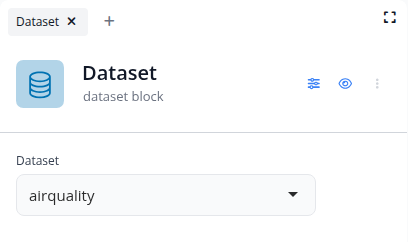
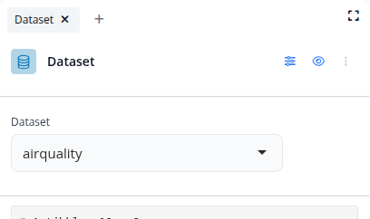
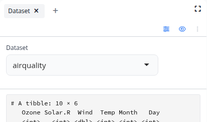
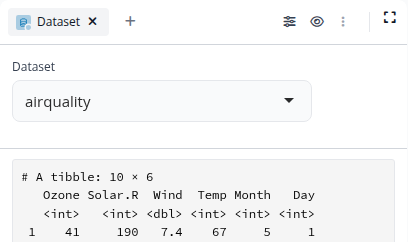
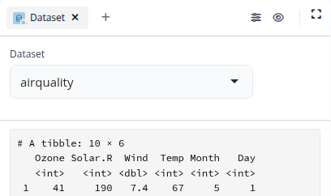
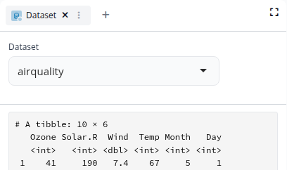

The header is the part of a block above its controls: a 48px category icon, a 20px title, the block type as
a subtitle, and three actions (controls, preview, "…"). It sits under a dock tab that already says the block's name, so every
block says its name twice and spends about 80px before its first control. These are the experiments from September (the
playground, blockr.ui feat/theme-experiment and blockr.dock feat/themable-block-header), captured
from the running playground, then three questions with new options.

Today. 48px icon, 20px title, subtitle, actions on the right.

Compact. 28px icon, 16px title, no subtitle. Token overrides only.

Bare, actions in a row. No icon, no title (the tab has the name); the actions keep a thin row. CSS only.

Bare, actions in the tab strip. The icon moves into the tab; the actions sit right of the tabs. Needs dockViewR.

Bare, menu on the tab icon. "…" goes; its menu opens from the icon in the tab. Needs dockViewR.

Bare, all in a menu on the tab. One "…" next to the ×; controls and preview are inside it. Needs dockViewR.
What every block gets on every board. Renaming happens on the title, so a default header keeps the title.
A. Today
48px icon, 20px title, the type underneath, actions right. About 80px.
B. Compact (the experiment)
28px icon, 16px title, no type. About 52px.
C. One line, with the type
Compact, plus the type in muted after the title, so a renamed block still says what it is. About 52px.
A board option for dashboards and simplified apps. The tab carries the name, so the card drops the header. Two things have to find a new place: rename (today only the card title renames), and the three actions.
A. No bare option
Every board uses the default header (Q1).
B. Bare now, actions in a row
The experiment's CSS-only half: a 28px row with the actions right; rename moves into the "…" menu.
C. Bare later, all in the tab strip
The mark goes into the tab and the actions sit right of the tabs; renaming is a double-click on the tab. Needs dockViewR (cynkra/dockViewR#102).
From topic 18: in a list you wanted the tinted square with the package badge (option B) but smaller than 32px. The mark appears in four places; one ladder keeps it the same shape everywhere: tinted square, coloured glyph.
A. 24px in lists, package as a badge
Header 28, list rows 24, tab 16. The badge from topic 4.
B. 20px in lists, package as a badge
Header 28, list rows 20, tab 16.
C. 24px in lists, package as text
Header 28, list rows 24, tab 16; the package as meta text.